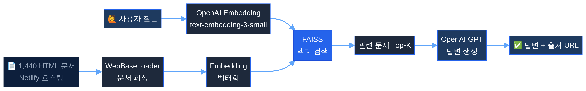
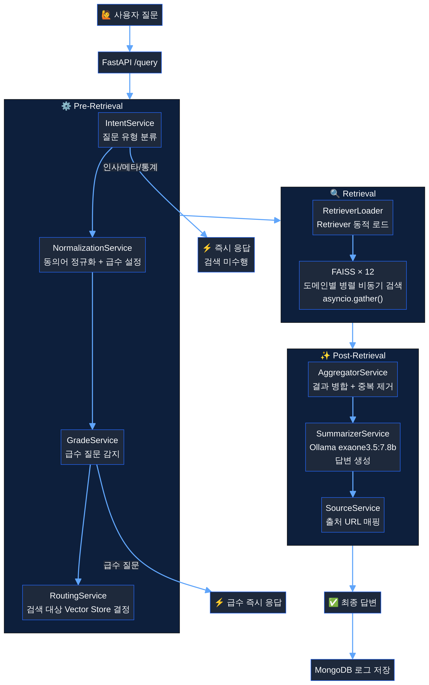

의료 현장의 정보 접근성 문제를 AI로 해결한 2개년 프로젝트
부산광역시 감염병관리지원단은 매년 전국 의료기관에 법정감염병 144종에 대한 핸드북을 발간합니다. 그러나 긴급한 대응이 요구되는 의료 현장에서 수백 페이지의 문서를 수동으로 검색하는 방식은 시간적 비효율과 정보 접근성 저해를 초래했습니다.
이 구조적 문제를 해결하기 위해 자연어 질의로 즉시 원하는 정보를 찾아주는 AI 챗봇 시스템의 개발이 요구되었으며, 발주처는 세 가지 핵심 요구사항을 제시했습니다.
| # | 요구사항 | 기술적 과제 |
|---|---|---|
| 1 | 144종 법정감염병 최신 지침서 내용 100% 반영 | 문서 전처리 파이프라인 + 벡터 DB 설계 |
| 2 | 답변 시 공식 문서의 출처 URL 반드시 표기 | 메타데이터 설계 및 Source 매핑 로직 |
| 3 | 제공 문서 범위 내에서만 답변 — 할루시네이션 방지 | RAG 구조 + 프롬프트 엔지니어링 |
의료 도메인 특성을 고려한 아키텍처 결정
| 비교 항목 | Fine-tuning | RAG (채택) |
|---|---|---|
| 지식 업데이트 | 재학습 필요 (High Cost) | 문서 교체만으로 즉시 반영 |
| 할루시네이션 | 통제 어려움 | 검색 문서 기반으로 억제 가능 |
| 출처 표기 | 불가능 | 공식 문서 URL 연결 가능 |
| 하드웨어 요구사항 | 7B 모델 기준 24GB~48GB+ VRAM | 인퍼런스 전용 GPU만 필요 |
| 의료 도메인 적합성 | 낮음 (신뢰성 문제) | 높음 (출처 추적 + 할루시네이션 억제) |
144종 질병 정보를 1,440개 HTML로 원자화한 Naive RAG 시스템

144종 질병 정보를 10개 카테고리(질병 개요, 증상, 진단, 치료, 예방 등)로 분절하여 총 1,440개의 독립적인 HTML 문서로 원자화했습니다. 보건의료 전문가와의 협업을 통해 의료 현장에서 실제로 어떤 정보 단위로 검색이 이루어지는지를 반영한 설계입니다.
각 HTML 문서는 Netlify를 통해 개별 URL을 부여받아, 발주처의 핵심 요구사항인 '출처 URL 표기'를 기술적으로 구현했습니다.
| 영역 | 기술 |
|---|---|
| LLM | OpenAI GPT API |
| Embedding | text-embedding-3-small |
| Vector DB | FAISS (단일 인덱스) |
| Backend | FastAPI + Uvicorn |
| Framework | LangChain |
| 문서 호스팅 | Netlify (1,440개 URL) |
| 구분 | 한계 | 원인 | 영향 |
|---|---|---|---|
| 기술 | 표 구조 손실 | WebBaseLoader가 HTML 표를 텍스트로 평면화 | 핵심 정보인 표 데이터가 컨텍스트에서 왜곡 → 답변 품질 저하 |
| 기술 | 동의어 미처리 | "신종플루" ↔ "신종인플루엔자 A" 등 매핑 로직 부재 | 동의어 질문 시 엉뚱한 문서 검색 → 오류 응답 |
| 비용 | API 비용 누적 | OpenAI API 종량제 의존 | 운영 비용 예측 불가, 장기 운영 부담 |
| 코드 | 유지보수 어려움 | main.py에 모든 로직 집중 | 기능 추가·수정 시 코드 파악 비용 증가 |
| 운영 | 관리자 조회 부재 | 별도 관리 인터페이스 없음 | 월별 보고를 위해 DB에 직접 접근해야 하는 불편 |
Pre-Retrieval → Retrieval → Post-Retrieval 3단계 파이프라인으로 전면 재설계

LLM 호출 0회 — 완전한 재현성과 Zero Cost 전처리
핵심 설계 결정: 파이프라인 전체에서 GPT·Gemini 등 생성형 LLM을 사용하지 않았습니다. 문서 파싱은 Upstage Document Parse API(OCR)에, 구조화 로직은 순수 Python 정규식·문자열 파싱에 위임하여 비용과 레이턴시를 최소화하고 동일 입력에 대한 완전한 재현성을 보장했습니다.
카테고리별 관리 지침서 11종을 각각 독립적인 FAISS 인덱스로 구축합니다. Upstage API가 모든 제목을 # 단일 레벨로 반환하는 한계를 극복하기 위해, 정규식 패턴 매칭으로 H1/H2/H3 논리적 계층 구조를 재구축하는 헤딩 계층 승격(Heading Elevation) 기법을 적용했습니다.
약 1,400개의 PDF를 처리하기 위해 LangGraph 5노드 그래프를 설계했습니다. 핵심 후처리 로직인 convert_table_to_sections()는 Upstage API가 반환하는 2열 표를 섹션 구조로 변환하여 청킹 시 의미 단위가 완벽하게 보존되도록 했습니다.
MD5 해시 키 기반 캐싱 시스템을 구현하여, 1,400개 파일 처리 중 어느 시점에 중단되더라도 안전하게 재개할 수 있습니다.
EXAONE 3.5 7.8B + bge-m3로 외부 API 의존성 완전 제거
| 모델 | 한국어 성능 | Long Context | 채택 |
|---|---|---|---|
| EXAONE 3.5 7.8B | 7.96 / 9.08 (1위) | 32K 토큰 | ✅ 채택 |
| Qwen 2.5 7B | 5.19 / 6.38 | 128K 토큰 | 제외 |
| Llama 3.1 8B | 4.85 / 5.99 | 128K 토큰 | 제외 |
| Gemma 2 9B | 7.10 / 8.05 | 8K 토큰 | 제외 |
| 모델 | 한국어 성능 | API 필요 | 채택 |
|---|---|---|---|
| bge-m3 | 최상위권 (MTEB) | 없음 (로컬) | ✅ 채택 |
| text-embedding-3-small | 우수 | 종량제 | 제외 |
| KoE5 | 중간 | 없음 | 제외 |
| multilingual-e5-large | 중간 | 없음 | 제외 |
Ubuntu 22.04 + RTX 4090 서버에 Docker 기반 멀티 서비스 배포
| 컨테이너 | 역할 | 포트 |
|---|---|---|
busan-chatbot | Nginx + React SPA 정적 파일 서빙 | 80 |
busancidc-back2 | FastAPI + RAG Pipeline | 8000 |
mongodb | 질의응답 로그 저장 | 37017 |
Ollama (Host) | LLM + 임베딩 서빙 (RTX 4090 GPU 활용) | 11434 |
Nginx는 리버스 프록시로서 SPA 정적 파일 서빙과 /query, /admin 경로를 백엔드로 전달합니다. LLM 응답 시간을 고려하여 proxy_*_timeout을 600초로 설정하고, NVIDIA 드라이버 버전은 apt-mark hold로 고정하여 자동 업데이트로 인한 커널 모듈 불일치를 방지했습니다.
2개년에 걸친 시스템 고도화의 비약적인 성능 향상
| 핵심 지표 | v1 (2024) | v2 (2025) | 개선 효과 |
|---|---|---|---|
| Answer Relevancy | 75% | ~80% | +5%p 향상 |
| 운영 비용 | OpenAI 종량제 과금 | 로컬 LLM (0원) | Zero API Cost |
| 데이터 규모 | 1,440 문서 (단일 인덱스) | 11,246 청크 (12개 인덱스) | 7.8배 확장 |
| 문서 구조 보존 | 표 데이터 → 평문 손실 | 표 → 섹션 변환 보존 | 정보 신뢰성 100% |
| 동의어 처리 | 미지원 | 142종 매핑 지원 | 검색 정확도 대폭 향상 |
| 코드 구조 | 단일 파일 집중 (main.py) | 10개 서비스 클래스 분리 | 유지보수성 극대화 |
| 관측성 | 단순 DB 로그 | Langfuse + 관리자 대시보드 | 체계적 모니터링 |
성공 요인, 트러블슈팅, 향후 개선 방향
| 과제 | 내용 | 기대 효과 |
|---|---|---|
| RAG 평가 자동화 | RAGAS 프레임워크 활용 자동 평가 파이프라인 | 정량적 품질 관리 및 지속적 성능 개선 |
| 스트리밍 응답 | SSE / WebSocket 기반 스트리밍 도입 | 사용자 체감 대기 시간 단축 |
| 멀티턴 대화 | 대화 컨텍스트 유지 메모리 시스템 통합 | 자연스럽고 연속적인 상담 경험 |
| 하이브리드 검색 | 시맨틱 검색(Vector) + 키워드 검색(BM25) 결합 | 고유 명사 및 전문 용어 검색 정확도 극대화 |
2개년에 걸쳐 전 영역을 고도화한 완전한 기술 스택 전환
| 영역 | v1 (2024) | v2 (2025) |
|---|---|---|
| LLM | OpenAI GPT API | Ollama EXAONE 3.5 7.8B (로컬) |
| Embedding | text-embedding-3-small | bge-m3 (로컬, 1,024차원) |
| Vector DB | FAISS (단일 인덱스) | FAISS × 12 (도메인별 분리) |
| 문서 파싱 | WebBaseLoader (HTML) | Upstage Document Parse API (PDF OCR) |
| 파이프라인 | LangChain | LangChain + LangGraph |
| Backend | FastAPI + Uvicorn | FastAPI + Uvicorn (비동기 Motor) |
| Frontend | HTML/CSS/JS | React 19 + Vite + Tailwind CSS |
| 배포 | Docker | Docker + Nginx + Ollama (RTX 4090) |
| 관측성 | MongoDB 로그 | Langfuse + MongoDB + Jinja2 대시보드 |
| 의존성 관리 | pip | Poetry (엄격한 버전 잠금) |